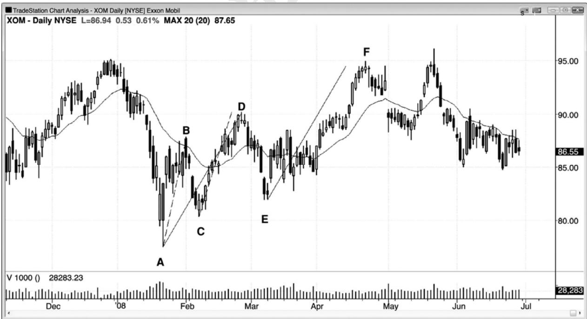
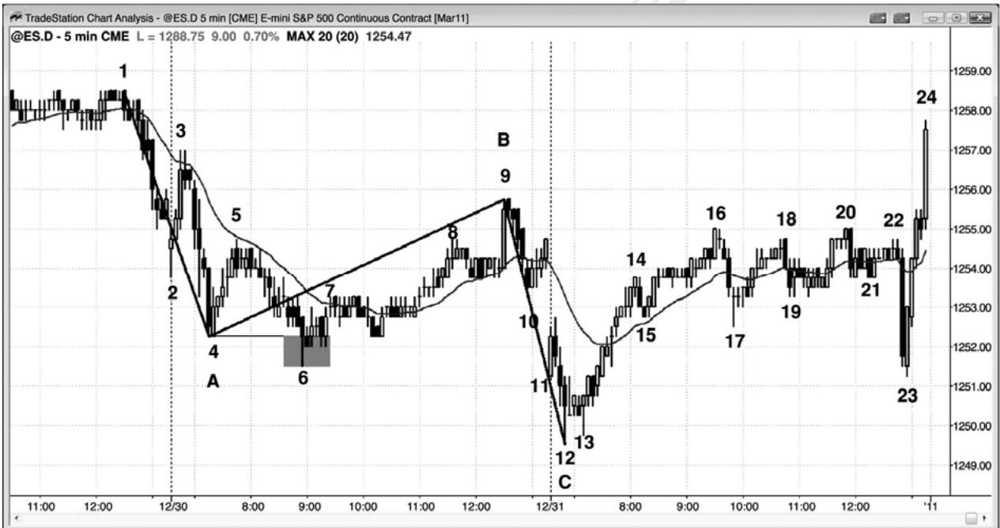
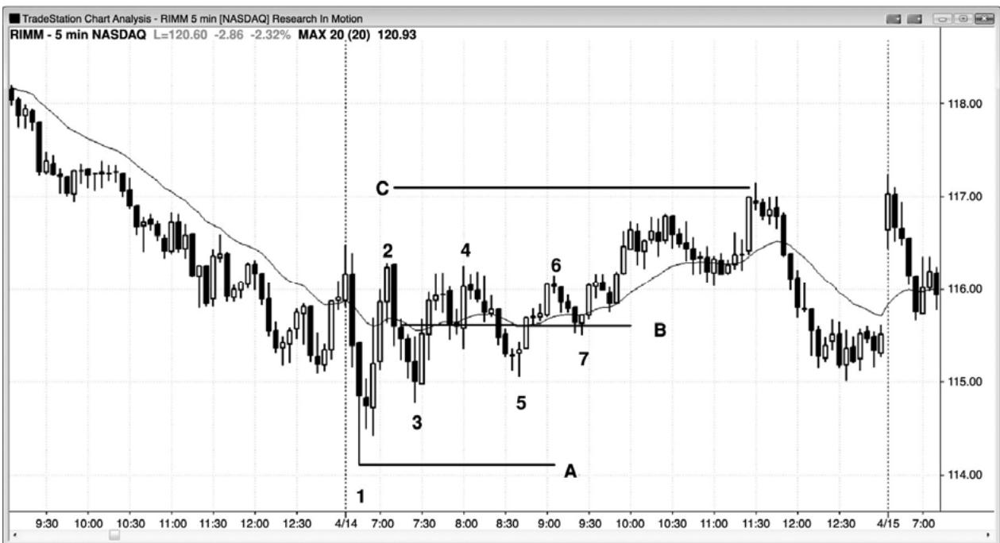
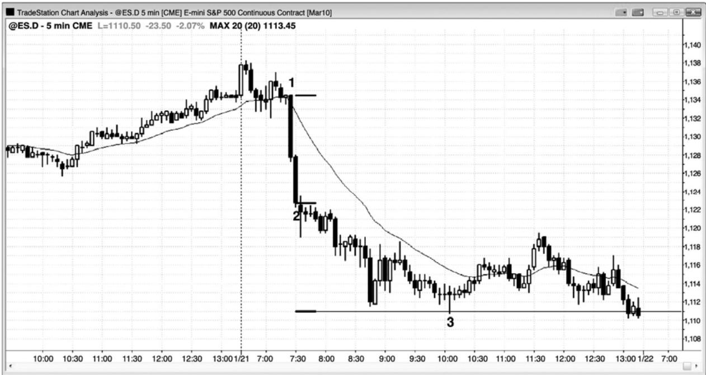
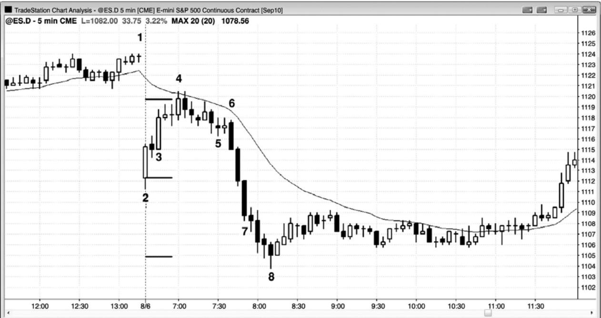

第7章 基于第一腿（尖峰）的测量运动¶
第 7 章 基于第一第腿（尖峰）的测量运动
一波测量运动是一个波段，高度等于相同方向的前一波段。我们根据市场第一次运动的幅度来评估第二次运动的幅度。测量运动为什么会有效呢？如果你在寻找一波测量运动，那么你认为自己知道总在场内的方向，也就是说你至少有 60%的确定性认为那波运动将会产生。测量运动通常是基于尖峰或交易区间的高度，初始保护性止损通常要超出第一波运动的起点。举例说明，如果出现一个强买进尖峰，那么初始保护性止损就在那个尖峰低点下方一个跳动处。如果那个尖峰很大，那么交易者们很少会冒那么大的风险，通常仍然有一笔可能获利的交易，但是理论止损仍然位于尖峰下方。另外，胜率常常大于 60%。如果那个尖峰的高度约为 4 点，那么风险也约为 4 点。由于你认为测量运动将会产生，在尖峰顶部买进的策略非常可靠，那么你就是在胜率为 60%的情况下冒 4 点风险。仅当回报至少与风险一样大时，在数学上才认为你的想法（当胜率为 60%时，那种策略是获利的）是正确的。这将在关于交易数学的第 25 章中讨论。也就是说，为了使那种策略奏效，你需要拥有 60%的几率至少赚 4 点，那就是测量运动目标。换言之，那种策略奏效的唯一方式是，测量运动目标在大约 60%的时间里被击中。由于趋势交易是最可靠的交易形式，如果存在有效的策略，那么这种策略肯定是其中一种。这就是测量运动为什么有效的原因吗？没有人确切地知道，但那是一种貌似可信的解释，是我想像到的最好的解释。
大部分测量运动要么以尖峰为基础，要么以交易区间为基础。当测量运动以尖峰为基础时，它通常会引出交易区间；当它以交易区间为基础时，它通常会引出尖峰。举例说明，如果有一个双重顶（它是一种交易区间），那么交易者们常常会在向上或向下突破到达测量运动目标处部分获利了结。交易者们寻找突破，即尖峰，他们通常预期在尖峰刚刚到达测量运动目标区时获利了结。如果突破带有一个强尖峰，而且在测量运动目标处没有明显的暂停，那么那个尖峰自身常常引出一波基于尖峰高度的测量运动。一旦市场到达那里，交易者们常常开始获利了结，结果通常形成交易区间。
一旦一波很强的运动出现回撤，通常会出现同方向的第二条腿，它的幅度通常近似等于第一条腿。这个概念是为第二条腿的终点投影可能的目标的几项可靠技术的基础。那个测量运动区是对趋势头寸获利了结的合理位置，然后你就可以等待另一个回撤而重新建立自己的头寸。如果出现强反转架构，那么你还可以考虑逆势交易。
当市场形成一波迅猛的运动，然后出现回撤时，它很可能出现第二条腿，而第二条腿的高度常常近似等于第一条腿的高度。这是腿 1＝腿 2 运动，也称作 ABC 运动或 AB = CD 运动。
这种按字母顺序定义术语的方法容易引起混淆，只把那两波运动称作腿 1 和腿 2，把腿 1 后面的回撤称作回撤，要更简单一些。按字母顺序标号的混乱之处是，在 AB = CD 形态中，B、C、D 对应着 ABC 运动的 A、B、C。ABC 形态的 B 腿就是那个回撤，它在市场轮廓上产生一个密集区（芝加哥商业交易所（CME）集团的价格和时间信息图）。任意密集区的中点常常引起一波测量运动，测量运动的目标与根据 AB ＝ CD 得出的目标相同。举例说明，对于多头趋势中的 AB = CD，如果你从点 A 开始，加上 AB 腿（即 B-A）的长度，然后再把那个长度加到 C点，那么就得到 C + (B - A)。对于那个密集区，你从点 A 开始，加上 AB 腿的长度（即 B-A），然后退回到密集区的一半（即减去BC腿的一半），然后加上B减BC 密集区一半的高度，得到从 BC 密 集 区 中 点 开 始 的 向 上 的 测 量 运 动 。 （ 译 注 ：A+B-A-BC/2+(B-A-BC/2)=B-BC+(B-A)=C+(B-A)）两个式子都等于 C + (B - A) ，所以给出的是相同的测量运动投影。这种方法复杂，几乎没什么意义，因为你不应仅仅依据斐波那契扩展或测量运动或其他任何磁力位就使用限价单做逆势交易。它们仅仅提供一个指导，使你在市场靠近它们前一直做顺势交易，在那一点你也可以考虑逆势架构。
除了形成测量运动的明确回撤入场之外，有时会出现同样准确的更为微妙的情形。当市场在一波强趋势运动后出现一条相当强的回撤腿，然后又进入交易区间时，交易者们可以利用那个区间的近似中点投影，看回撤的第二条腿可能到达哪里。随着交易区间的展开，不断调整你估计的中点所有的位置，一旦那一波运动完成其第二条腿，那通常是在回撤的中点附近。这只是为你应该预期两条腿回撤在何处结束，市场在何处形成一个趋势恢复交易架构提供一个向导。另外，你也可以使用腿 1＝腿 2 测量方法。举例说明，在一个两条腿多头旗形中，取第一条下跌腿的高度，然后从回撤顶部减去那一高度，找出回撤的第二条下跌腿可能结束的合理位置。
P92
在尖峰和通道趋势中，存在这种方法的一个变种，通道的高度常常约等于尖峰的高度。当尖峰很强时这尤为正确，比如由一条异常大型趋势棒构成的尖峰，或者由几条几乎没有重叠、尾线很短的强趋势棒构成的尖峰。当出现强尖峰时，市场常常会在任一方向上形成一波测量运动，但是根据尖峰第一棒和最后 一棒的开盘价、收盘价、最高价或最低价的组合，通常是形成顺势的测量运动。举例说明，如果出现一个多头尖峰，取从尖峰第一棒开盘价到尖峰最后一棒收盘价之间的点数，然后加到尖峰最后一棒的收盘价上。接下来的通道通常会在那一区域找到一些阻力，市场常常会向下调整至通道底部。这个测量运动目标是一个你可以获利了结多头头寸的位置。市场形成的测量运动的高度，有时可能等于从尖峰第一棒低点到尖峰最后一棒收盘价或最高价的距离，有时可能等于从第一棒开盘价到最后一棒最高价之间的距离，所以有必要考虑所有可能性。比较少见的情况下，市场不会形成一条像样的上升通道，而是反转运动至尖峰的底部下方，然后形成一波向下的测量运动。
重要的是记住，大部分时间里市场是处于某种交易区间内，所以等距运动的方向概率是50%。也就是说市场上涨X点的可能性与下跌X点的可能性一样大。当出现趋势时，趋势方向上的方向概率要大一些。当出现强尖峰时，坚持到底的几率可能是 60%，有时甚至是 70%，前提是整个图表形态与强趋势运动相一致。另外，当市场位于交易区间底部时，几率偏向于向上运动；当市场位于交易区间顶部时，几率偏向于向下运动。这是由于市场的惯性，也就是说市场倾向于继续做刚刚在做的事情。如果它在做趋势运动，那么几率偏向于趋势运动，如果它在交易区间内，那么几率偏向于突破尝试失败。实际上，大约 80%的趋势反转尝试失败，因此，你应该等待它们演变为回撤，然后在趋势方向上入场。另外，80%的对交易区间的突破失败，所以从数学上来讲，在交易区间顶部和底部做逆势交易，要比在靠近顶部的大型多头
下面我们举一个使用若干假设的测量运动的例子。一个由三条多头趋势棒构成的强多头尖峰，突破了一个交易区间。下一棒是一个小十字星，这个暂停意味着那个尖峰有前一棒（即连续多头趋势棒中的最后一棒）结束。由于棒线之间几乎没有重叠，每一棒开盘价都位于或高于前一棒的收盘价，所以突破很强。任意一棒的最长尾线只有两个跳动，而且底部有几棒没有尾线。第一棒的高度为 3.5 点（14 个跳动），第二棒的高度为 10 个跳动，第三个棒的高度为 8 个跳动，第四棒拥有一个 1 个跳动高的多头实体、3 个跳动长的下尾线和 2 个跳动长的上尾线。那个十字星是缺乏动能的第一棒，所以它告诉你尖峰已经在前一棒结束。第一棒的开盘价比第三棒，尖峰最后一棒的收盘价低 8 点，所以应该认为尖峰的高度最少是 8 点。你可以把第一棒的低点至第三棒的高点，甚至是第四棒十字星的高点作为尖峰的高度，但是初始投影时使用较小的数据，会更稳妥一些。如果第二条腿超越了这个目标，那么就观察其他目标。
当那个尖峰正在形成时，如果你在任意一点买进，那么你的止损可能不得不低于尖峰的底部。为了方便讨论，假定你所冒的风险是跌至尖峰第一棒的开盘价下方 1 个跳动。如果你是在尖峰 3 点高时以市价在最高跳动买进的，那么你就是在冒着大约 3 点的风险去博取 3 至少 3 点的利润。在那一时刻，你认为市场会形成一波等于尖峰高度的向上的测量运动，即高度为 3 点的测量运动。你知道自己的止损在何处，但是仍然不知道尖峰的顶部在何处，但是你知道它至少会与你买进的位置同样高（译注：作者本意可能是从入场点到尖峰顶部的距离，与从尖峰底部到入场点的距离相同）。由于你相信市场正在做趋势运动，所以你感觉市场在下跌并击中下方 3 点的止损前上涨 3 点的几率高于 50%。
在尖峰继续增长至 7 点时，你改变了自己的估计。现在你认为由于市场仍在做趋势运动，所以市场下跌 7 点前上涨 7 点的几率至少为 50%。那时，你的交易已经有了 4 点的账面利润，刚开始那笔交易你是冒着 3 点的风险去博取 3 点的利润。如果愿意，那么你可以在仍然在形成中的尖峰的最高跳动买进更多，那么你的风险将是 7 点（或许还要多几个跳动，因为你可能希望冒跌至尖峰第一棒下方 1 个跳动的风险），你的利润目标将是上涨 7 点。但是，对于你的第一笔多头交易，你的风险仍为3点，但现在有超过50%的几率赚取11 点（从你的入场点到当前尖峰顶部的 4 点，然后再上涨 7 点）。
一旦那第四棒形成，它是一个十字星，那么你就知道上涨尖峰已经在前一棒收盘结束，高出尖峰第一棒开盘价 8 点。在那一点，你可能得出结论，市场有 50%以上的可能性在下跌 8点至尖峰开盘价或底部之前，会在尖峰收盘价上方再上涨 8 点。由于那个尖峰非常强劲，所以上涨几率很可能大于 60%。
P93
一旦尖峰结束，双向交易开始，不确定性就开始增加。市场形成横盘至下跌的调整，然后又开始通道上涨。虽然市场可能从这一回撤的底部形成腿 1＝腿 2 的一波上涨运动，其中尖峰是腿1，通道是腿2，但是当尖峰非常强劲时，比较可靠的目标是以尖峰第一棒开盘价到尖峰最后一棒收盘价为基准的测量运动目标。随着市场上涨，继续上涨的几率越来越低。当多头通道大约到达至测量运动目标的一半时，等距运动的方向概率降至 50%至 55%左右，不确定性再次变得非常高。记住，多头通道之后，市场通常会跌回通道底部，然后至少出现一波反弹，所以多头通道实际上是尚未形成的交易区间的第一条腿。一旦市场进入测量运动目标区域，它很可能是那个最初区间的高点，几率就偏向于下跌。这一点对于所有交易区间来说都是正确的。这是获利了结多头头寸的绝好位置，因为有如此多的交易者在测量运动目标区获利了结，所以市场开始回撤。在市场折返至通道底部附近前，大部分交易者不准备再次积极买进，在通道底部，通常会形成一个双重底。这一区域也是一个磁力位。多头开始再次买进，在通道顶部做空的空头则会获利了结。因为市场现在是在正在形成中的交易区间的底部，所以方向概率略偏向于看涨。
一旦市场进入交易区间，每当市场靠近区间中点时，等距运动的方向概率就又回到 50%。如果你的风险是 X 点，那么在你的止损被击中前，你就有 50%的几率赚到 X 点，在你的利润目标到达前，就有 50%的几率亏损 X 点。这是市场相对有效的一个副产品。大部分时间里，市场都是有效的，亏损 X 点前赚取 X 点的几率接近 50%。当几率大于 50%时，便出现最好的交易机会，但那常常出现在尖峰期，是情绪化的快速运动，不容易入场。交易者们明白这一点，那也是尖峰非常迅猛，而且没有回撤的原因。交易者们随着市场一路上涨不断加仓，因为他们知道，在尖峰结束前，赚取与风险一般大的利润的几率大于 50%，而市场一旦进入通道，几率就又跌回到 50%左右。当那个尖峰正在形成时，他们不知道在市场涨得更高前是否会出现回撤，但是他们对于市场在近期内上涨非常有自信。与其等待可能永远不会出现的回撤而错失大好的交易机会，不如在市价或 1 到 4 个跳动的回撤买进，风险是跌至尖峰底部附近。这种紧迫感支持着尖峰的形成，增加的风险令很多交易者却步。大部分新手不愿冒 3 到 7 点的风险。相反地，他们应该只买进很小的头寸，或许是正确规模的四分之一，并且接受风险，因为那是机构正在做的事情。他们理解交易数学，所以不怕做那笔交易。
这种向 50-50 市场的运动，是所有测量运动交易的基础。几率失衡，向测量运动目标的反弹是尝试恢复不确定状态。市场总是会过冲，而且不得不回到 50－50 状态。测量运动区是几率的过冲，几率暂时偏向于空头。一旦市场折返到通道底部，几率再次过冲，但这次是偏向于多头。当市场向正在形成中的交易区间的中部反弹时，几率再次回到 50-50，市场进入平衡状态。

P94
在图 7.1 所示的日线图上，埃克森美孚形成从棒 A 到棒 B 的第一条很强的上涨腿，于是交易者们在棒 C 更高低点买进，预期出现腿 1＝腿 2 反弹。棒 D 在目标处略微过冲（虚线的顶部）。一旦进入目标区，很多交易者就认为他们做的多头交易可能是在截止棒A的下跌之后的两条腿空头反弹。如果你使用 ABC 标记，那么棒 B 就是点 A，棒 C 就是点 B，棒 D 就是点 C，由于这种混淆，所以最好简单地把截止棒 B的上涨运动称作腿1，截止棒C的抛盘称作回撤，截止棒D的上涨称作腿2。
一旦在棒 E 形成一个更高低点，反弹向上突破棒 D，交易者就可以把 AD 看作第一条腿，它包含两条较小的腿（AB 和 CD），然后保持做多，直到出现一波向上的测量运动（AD=EF，目标是虚线的顶端）。
斐波那契交易者还会关注其他扩展（138%，135%，162%，等等），作为寻找反转的准确区域，但那太过复杂，而且都是近似。一旦市场出现明显的双向交易行为，每当出现强信号时，只要低买高卖，就同样可靠。

有时，腿 1＝腿 2 测量运动中的腿 1 不是初始下跌的绝对低点。从第一条下跌腿开始的向上调整，通常是一波两条腿运动或一个楔形空头旗形，但是任一情形下的回撤常常会跌至调整腿的起点下方，比如在图 7.2 中的棒 6 处。截止棱 9 形成，看起来第一条下跌腿之后的回撤结束了，精明的交易者们会接受这种可能性，即截止棒 9 的向上调整开始于棒 4 而不是棒 6，所以认为第二条下跌腿可能等于棒 1 至棒 4 第一条下跌腿，而不是等于棒 1 到棒 6 第一条下跌腿。棒 12 的底部是基于第一条腿终点棒 4 的一波精确的腿 1＝腿 2 测量运动。相反地，如果市场继续下跌，那么一旦市场跌至基于在棒 6 结束的腿 1 的腿 1＝腿 2 区域，那么
交易者们将注意观察，看接下来会发生什么。
为什么认为腿 1 在棒 4 结束这种可能是合理的呢？在第二条下跌腿开始前，交易者们正在寻找两条腿回撤，从棒 6 到棒 9 的上涨运动是在通道内，所以很可能只是一条腿。艾略特波浪交易者们知道，向上的调整可能包含一个跌破初始下跌运动底部回撤，他们把这种横盘模型的调整称为持平（flat）。这里的持平将是截止棒 5 的上涨运动，截止棒 6 的下跌运动，以及截止棒 9 的上涨运动。另外，截止棒 5 的上涨运动是一个强度适中的多头尖峰，所以它可能是调整的起点。那个上涨尖峰之后的回撤到棒 6 结束，形成一个更低低点，更低低点回撤是很常见的。所以，随着调整展开，交易者们不再因这种解释而困惑。
棒5和8 形成一个可能的双重顶空头旗形，但是截止棒 9 的突破消除了那种可能。然而，每当市场向上突破双重顶时，交易者们就注意观察它是否失败。如果失败的话，那么这实际上就是一个楔形顶。向上的三推是棒 5 和棒 8 双重顶，以及截止棒 9 的失败突破。
一旦市场在失败突破后尖峰下跌至棒 10，交易者们就认为从棒 1 高点起的第二条下跌腿已经开始。
这张图上还有其他一些值得注意的地方。棒 12 是一个扩张三角形底，棒 4、6、和 12 是三个下推。
第一天开盘迅速上涨至棒3，然后迅速下跌至棒6，棒6到开盘价的高度与开盘价到棒3的距离差不多。虽然那个区间不大，但是也差不多等于近日的平均区间（12月底常常形成一些小区间日）。每当一天的区间等于平均区间，开盘价位于区间中部时，市场常常会努力在开盘价附近收盘。交易者们知道这一点，因此棒 7 之后的紧凑交易区间，很可能会出现突破并测试当天开盘价。那一天在开盘价上方 1 个跳动处收盘，在日线图上形成一条几乎完美的十字星 K 线。
P95
截止棒 9 的反弹是对跌破棒 3 的抛盘的突破测试。截止棒 23 的抛盘是对上破棒 13 的反弹的突破测试，它错过了盈亏平衡止损1个跳动。它也是对当天开盘价的一个精确测试。
图 7.3 基于交易区间中点的测量运动

图 7.3 中，在开盘从昨日低点反转后，动态研究公司（RIMM）出现一波截止棒 2 的快速上涨，然后回撤至棒 3。由于强三棒多头尖峰之后很可能出现第二条上涨腿，所以，如果交易者们想知道它可能在何处结束，那么可以不断调整线 B，使其位于正在形成的区间的中点。一旦市场突破，他们就可以绘制一条平行线，然后把向上拖动与线 B 到线 A 相等的距离，得到一个测量运动目标，他们可以预期在那里获利了结。虽然市场处于交易区间内，但是也略微倾向于向上突破，因为交易区间之前的运动是向上的，而且交易区间内的大多数棒线都是多头趋势棒，代表着买压。
在市场向上超越棒 6，从三角形中突破而出前，交易者们可以像在任意交易区间内一样在两个方向交易。由于在交易区间内多空双方都认为存在价值，所以大部分偏离中点的探索都会失败，市场将被拉回区间内部。最后，市场将突破磁场，在新的价值找到价值。
图 7.4 基于空头尖峰的测量运动

当出现由新闻发布导致的尖峰时，那个尖峰常常会引起一波测量运动，交易者们可以准备在测量运动的目标处获利了结。图 7.4 中的棒 1 处，市场受到有关总统提议新的银行法规的震惊，这引起了两条大型空头趋势棒。一旦出现一条暂停棒，比如一个十字星、一条带有很长下尾线的棒线、或者一条具有多头实体的棒线，那么你就知道尖峰已经在前一棒结束。这里，尖峰持续了两棒，交易者们寻找一波从尖峰最后一棒收盘开始的向下的测量运动。他们预期测量运动的跳动数，约等于从尖峰第一棒开盘价向下测量到尖峰最后一棒收盘价的跳动数。有时，测量运动的高度会等于从尖峰第一棒高点到最后一棒低点之间的距离，但是交易者们总是先观察最近的可能目标，仅当第一个目标未能限制住市场时，他们才会寻找更大幅度的运动目标。这一目标是获利了结空头波段交易，然后寻找回撤再次做空的很好位置。如果在那个测试区出现强反转信号，那么可以考虑逆势交易。
P96
图 7.5 尖峰可能引起向上或向下的测量运动

尖峰之后的测量运动，既可能向上，也可能向下。图 7.5 中，开盘出现一波持续 6 棒的强反弹，但是在这个大型下跌缺口日，市场在均线处停止上涨，最终向下形成一波测量运动。那么测量运动的基准是从尖峰第一棒开盘价到尖峰最后一棒的收盘价。虽然大部分尖峰都在一出现暂停棒时结束，但是，如果市场在暂停后继续上涨，那么应该考虑它的作用可能就像是一个尖峰，可能是较高时间框架图表上的一个尖峰。